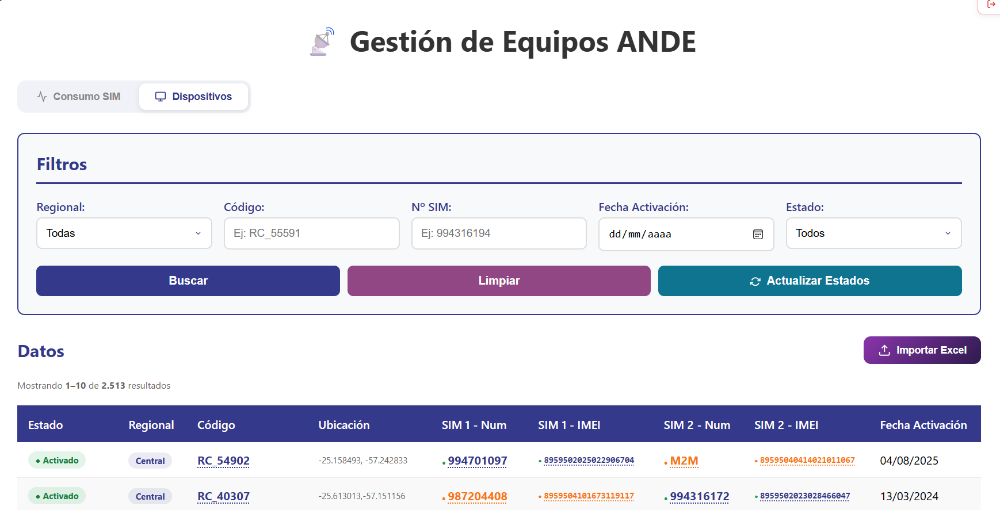
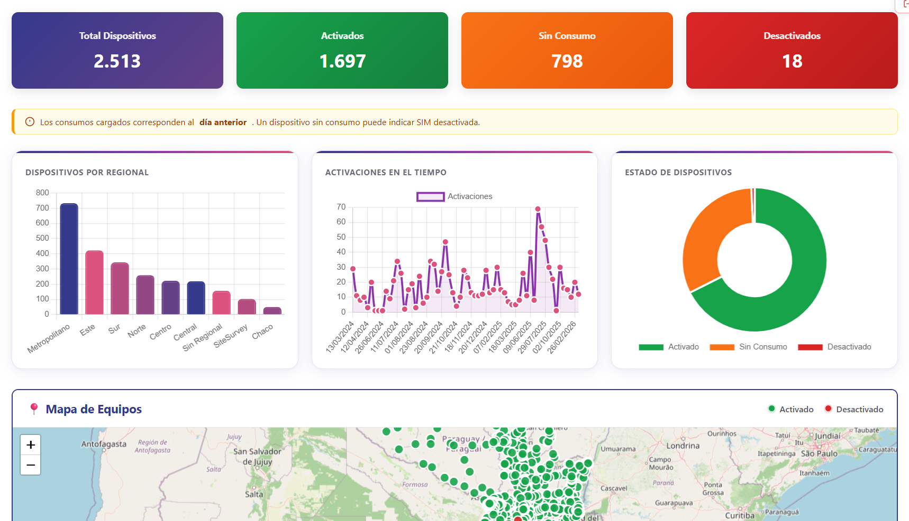

📋 Contenido
1 Acceso al sistema
Al abrir la aplicación aparece la pantalla de inicio de sesión.
- Ingresá tu usuario en el primer campo.
- Ingresá tu contraseña en el segundo campo. Podés usar el Ãcono del ojo para mostrar u ocultar los caracteres.
- Presioná el botón Ingresar o la tecla
Enter.
2 Pantalla principal y navegación
Una vez autenticado, verás la pantalla principal con dos pestañas en la parte superior:
| Pestaña | Qué muestra |
|---|---|
| 📊 Consumo SIM | Historial de consumo de datos por lÃnea SIM, inventario de lÃneas y vista por equipo RC. Es la pestaña que se abre por defecto. |
| ðŸ–¥ï¸ Dispositivos | Listado de todos los equipos ANDE con su código RC, ubicación, SIMs asignadas y mapa geográfico. |


Para cerrar sesión, hacé clic en el botón ⬅ Salir en la esquina superior derecha.
3 Tab Consumo SIM
Esta pestaña concentra toda la información de consumo. Tiene tres sub-vistas que se seleccionan con los botones:
📈 Vista Consumo
Muestra el historial detallado de consumo: una fila por lÃnea SIM por fecha de registro. Es útil para ver la evolución diaria o mensual de una lÃnea.

Filtros disponibles
| Filtro | Descripción |
|---|---|
| TelefonÃa | Filtra por operadora: Personal, Claro, Tigo o Vox. |
| Estado | Filtra por estado de la lÃnea: Todos / Activado / Desactivado. |
| RC | Buscá por código de equipo (ej. RC_55591). |
| Nº / IMEI | Buscá por número de teléfono o número IMEI de la SIM. |
| Desde / Hasta | Acotá el perÃodo de fechas a consultar. |
Hacé clic en Buscar para aplicar los filtros, o en Limpiar para reiniciarlos.
Columnas de la tabla
| Columna | Significado |
|---|---|
| Estado | Badge de color: â— Activado o â— Desactivado |
| Número | Número de la SIM. Hacé clic para filtrar el historial de esa lÃnea. |
| IMEI | Identificador único del módulo SIM. |
| RC | Código del equipo al que pertenece la SIM. Hacé clic para abrir el panel de detalle. |
| TelefonÃa | Operadora de la SIM. |
| MB | Megabytes consumidos en esa fecha. |
| Fecha | Fecha del registro de consumo. |
Botones de acción
📋 Vista LÃneas
Muestra el inventario de lÃneas únicas registradas en el sistema. Cada fila es una SIM diferente, con su consumo del mes actual y el consumo total acumulado.

Filtros disponibles
| Filtro | Descripción |
|---|---|
| Buscar lÃnea | Búsqueda libre por Número, IMEI, código RC. Los resultados se actualizan automáticamente mientras escribÃs. |
| TelefonÃa | Filtra por operadora. |
| Estado | Filtra por Activado o Desactivado. |
Columnas de la tabla
| Columna | Significado |
|---|---|
| Estado | Estado actual de la lÃnea. |
| Número | Número de la SIM. Clic para ver su historial en la vista Consumo. |
| IMEI | Identificador del módulo SIM. |
| TelefonÃa | Operadora. |
| RC | Equipo al que pertenece. Clic para ver el panel de detalle. |
| MB Mes | Consumo del mes en curso. |
| MB Total | Consumo total histórico acumulado. |
🔧 Vista RC (por equipo)
Muestra el consumo agrupado por código RC. Cada fila representa un equipo con sus dos SIMs (principal y respaldo) y el consumo total.

Filtros disponibles
| Filtro | Descripción |
|---|---|
| Buscar RC | Escribe parte del código RC para filtrar resultados en tiempo real. |
| Regional | Filtra por regional geográfica. |
Columnas de la tabla
| Columna | Significado |
|---|---|
| RC | Código del equipo. Clic para abrir el panel de detalle. |
| Regional | Regional a la que pertenece el equipo. |
| SIM Principal | Número de la SIM primaria. |
| MB SIM Principal | Consumo de la SIM primaria en el perÃodo. |
| SIM Respaldo | Número de la SIM secundaria (si existe). |
| MB SIM Respaldo | Consumo de la SIM secundaria. |
| Total MB | Suma de consumo de ambas SIMs. |
Los encabezados con la flecha ↑↓ permiten ordenar la tabla haciendo clic sobre ellos. Un segundo clic invierte el orden.
4 Tab Dispositivos
Muestra el inventario completo de equipos ANDE con todos sus datos de registro.

Filtros disponibles
| Filtro | Descripción |
|---|---|
| Regional | Filtra los equipos de una regional especÃfica. |
| Código | Buscá por código RC (ej. RC_55591). |
| Nº SIM | Buscá por número de lÃnea asignada al equipo. |
| Fecha Activación | Filtrá por la fecha en que fue activado el equipo. |
| Estado | Mostrá solo equipos Activados o Desactivados. |
Columnas de la tabla
| Columna | Significado |
|---|---|
| Estado | â— Activado o â— Desactivado |
| Regional | Regional geográfica del equipo. |
| Código | Código único del equipo (RC_XXXXX). Clic para abrir panel de detalle. |
| Ubicación | Descripción textual de dónde está instalado. |
| SIM 1 - Num | Número de la SIM principal. |
| SIM 1 - IMEI | IMEI del módulo SIM principal. |
| SIM 2 - Num | Número de la SIM de respaldo (si aplica). |
| SIM 2 - IMEI | IMEI del módulo SIM de respaldo. |
| Fecha Activación | Fecha en que el equipo fue dado de alta. |
EstadÃsticas rápidas
Debajo de la tabla aparecen cuatro tarjetas con resúmenes del conjunto filtrado:
Mapa de equipos
Al final de la sección Dispositivos encontrarás un mapa interactivo de Paraguay con la ubicación de cada equipo. Los pines verdes corresponden a equipos activados y los rojos a equipos desactivados. Podés hacer zoom y hacer clic en cada pin para ver el código RC.
5 Panel de detalle RC
Desde cualquier tabla que muestre un código RC, podés hacer clic sobre él para abrir el panel lateral de detalle.
El panel muestra toda la información de ese equipo:
Para cerrar el panel hacé clic en la ✕ de la esquina superior derecha, o en cualquier área gris fuera del panel.
6 Solicitudes desde el Panel RC y Panel SIM
Al abrir el panel de detalle de un RC o de una lÃnea SIM, encontrarás una sección Acciones con botones que envÃan solicitudes al equipo administrador. Estas solicitudes no aplican el cambio de forma inmediata; son registradas en el sistema para que el administrador las revise y ejecute.
🔴 Solicitar Desactivación
- Abrà el panel de un RC haciendo clic en su código.
- En la sección Acciones, presioná Solicitar Desactivación.
- Confirmá el mensaje emergente.
- El botón mostrará la confirmación de envÃo.
🔄 Solicitar Cambio de SIM
- En el panel RC, presioná Solicitar Cambio SIM 1 (o SIM 2).
- Se abre el formulario Solicitar Cambio SIM Principal.
- Completá el nuevo Número y/o IMEI. Al menos uno es obligatorio.
- Podés agregar una observación con el motivo del cambio.
- Presioná Enviar Solicitud. El formulario se cierra automáticamente al confirmar.
💳 Solicitar Saldo
- Hacé clic en un número de lÃnea en cualquier tabla para abrir el panel SIM.
- En la sección Acciones, presioná Solicitar Saldo.
- El número de la SIM se completa automáticamente.
- Ingresá el monto en guaranÃes a cargar. Es obligatorio.
- Agregá una observación si es necesario.
- Presioná Enviar Solicitud.
7 Gráficos e indicadores
Cada vista cuenta con gráficos automáticos que se actualizan al aplicar filtros.

| Vista | Gráficos disponibles |
|---|---|
| Consumo |
|
| LÃneas |
|
| RC |
|
| Dispositivos |
|
8 Estados y significados
Estado de las lÃneas SIM
| Badge | Significado |
|---|---|
| ◠Activado | La SIM está operativa y tiene registros de consumo activos. |
| ◠Desactivado | La SIM fue desactivada. No genera tráfico de datos. La fila aparece en gris. |
Estado de los equipos (Dispositivos)
| Badge | Significado |
|---|---|
| â— Activado | El equipo tiene al menos una SIM activa con consumo. |
| ◠Sin Consumo | El equipo está registrado pero no reportó consumo recientemente. Puede indicar un problema de conectividad. |
| ◠Desactivado | El equipo fue dado de baja. Todas sus SIMs están desactivadas. |
Operadoras / TelefonÃa
| Personal | SIM de la operadora Personal. |
| Claro | SIM de la operadora Claro. |
| Tigo | SIM de la operadora Tigo. |
| Vox | SIM de la operadora Vox. |
9 Preguntas frecuentes
55591). Los resultados se filtran en tiempo real.
- Verificá tu conexión a internet.
- Recargá la página con F5.
- Si el error persiste, contactá al administrador del sistema de INOVASI.